Introduction
While the basic workflow is similar for analyzing different types of chromatographic data with chromatographR, there are a few important differences when analyzing GC-FID data (or other 1-dimensional data). This vignette highlights some important considerations when using chromatographR to analyze GC-FID data.
To demonstrate the use of chromatographR for the analysis of GC-FID data, we will analyze a dataset on cuticular hydrocarbons (CHCs) composition in four species of paper wasps (Polistes spp.) collected by Dr. Andrew Legan (Legan 2022; Legan et al. 2022). The dataset includes CHCs collected from Polistes dominula (European paper wasp), Polistes exclamans (common paper wasp), P. fuscatus (northern paper wasp), and P. metricus (metric paper wasp). As in other social insects, cuticular hydrocarbons serve as chemical cues mediating a number of social behaviors in paper wasps (Legan et al. 2021), including nestmate recognition (Gamboa et al. 1986; Gamboa et al. 1996; Bruschini et al. 2011), establishment of social hierarchies (Jandt et al. 2014) and mate choice (Reed and Landolt 1990).
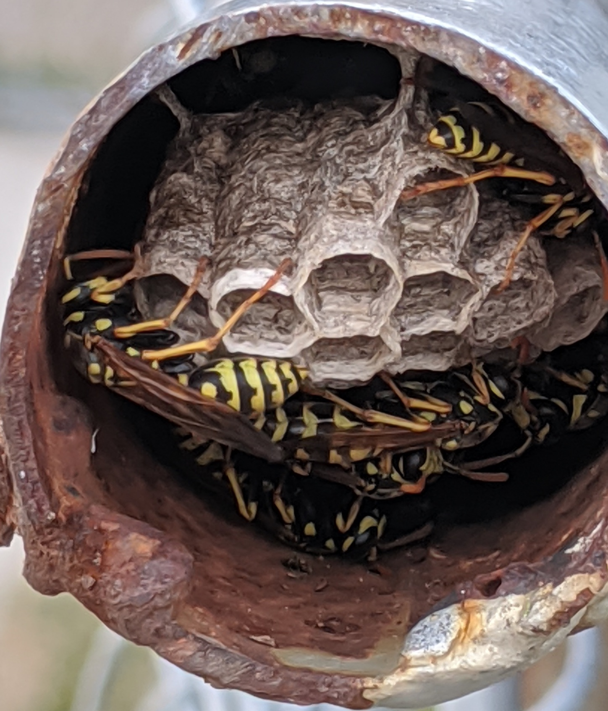
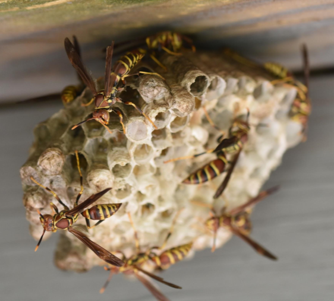
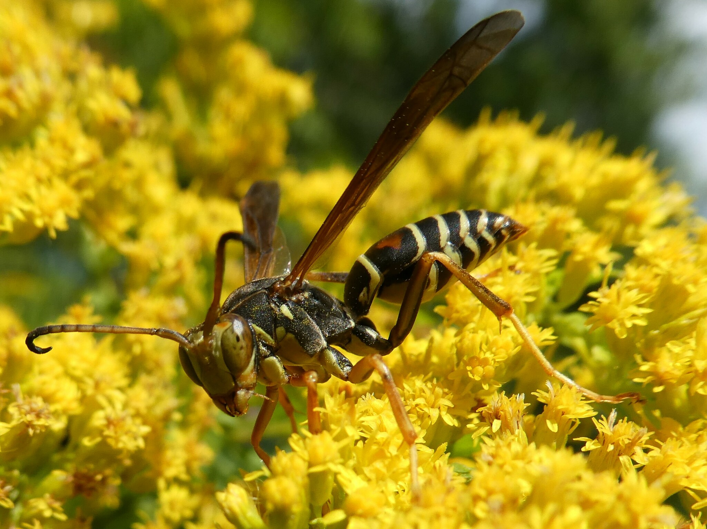
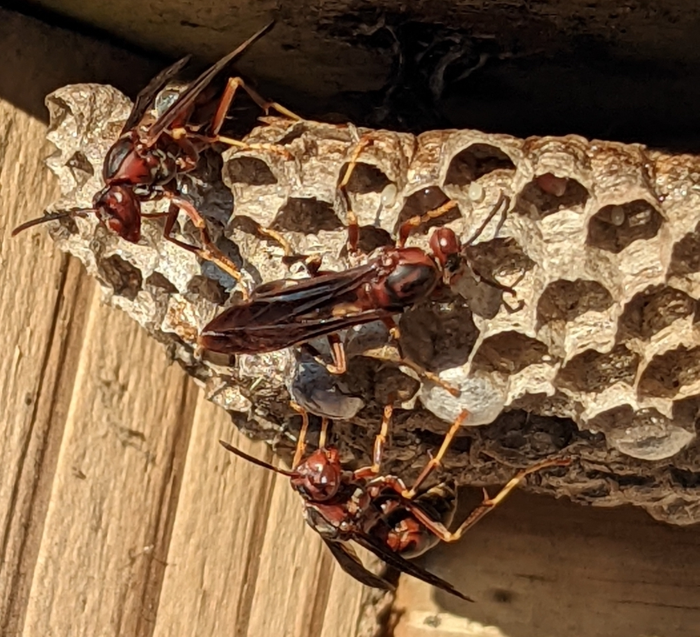
# These data are archived on Dryad (doi:10.5061/dryad.wpzgmsbr8), but Dryad's API now
# requires an authentication token, so we retrieve them from a mirror on GitHub:
# https://github.com/ethanbass/10_5061_dryad_wpzgmsbr8/releases/tag/v1.0
tmp <- tempfile(fileext = ".zip")
curl::curl_download("https://github.com/ethanbass/10_5061_dryad_wpzgmsbr8/archive/refs/tags/v1.0.zip",
destfile = tmp)
exdir <- tempfile()
unzip(tmp, exdir = exdir)
files <- list.files(exdir, recursive = TRUE, full.names = TRUE)
chrom_paths <- grep("README|METADATA|ANNOTATED", files, invert = TRUE,
value = TRUE)
dat <- read_chroms(chrom_paths, format_in = "shimadzu_fid")
path_to_metadata <- grep("METADATA", files, value = TRUE)
meta <- read.csv(path_to_metadata, sep = "\t")Printing dat gives an overview of what was read: the number of chromatograms, the method they were run with, and the sample name and run time recorded in each file.
dat
#> A chrom_list with 120 chromatograms
#> method: C:\LabSolutions\Data\A Legan\AWL Nov 6 ladder.gcm
#> name sample_name run_datetime
#> 1 ALKANE_LADDER ladder w/ IS 2018-11-15 12:20:51
#> 2 PDOM_F_CO_001 box13_42 2018-11-29 21:10:51
#> 3 PDOM_F_CO_002 box13_43 2018-11-29 22:15:46
#> 4 PDOM_F_CO_003 box13_38 2018-11-29 15:38:47
#> 5 PDOM_F_CO_004 box13_39 2018-11-29 16:43:42
#> 6 PDOM_F_CO_005 box13_40 2018-11-29 17:48:32
#> 7 PDOM_F_CO_006 box13_52 2018-11-29 03:40:16
#> 8 PDOM_F_CO_007 box13_51 2018-11-29 23:20:35
#> 9 PDOM_F_CO_008 box13_75 2018-11-29 07:59:34
#> 10 PDOM_F_CO_009 box13_66 2018-11-30 01:30:22
#> ... with 110 more chromatogramsThe sample names recorded in the files are the original sample labels (e.g. box13_42), so the species and sex of each wasp come from the separate metadata file, matched on file name. The chromatograms also differ slightly in length, so they do not share a time axis as read:
In order to get a good alignment, it is helpful to remove the solvent peak. We also want to reduce the time-axis resolution (from 40 ms to 300 ms), which cuts the number of timepoints about 7.5-fold and so reduces computation time. The preprocess function does both at once: interpolating onto a new time axis resamples the signal and restricts it to the range of the new axis, so supplying dim1 starting at four minutes drops the solvent peak as a side effect. It also puts every chromatogram on the same time points. (If you only want to trim a chromatogram, without resampling it, use crop_chroms instead — it subsets the existing time points rather than interpolating onto new ones.)
dat.pr <- preprocess(dat, smooth_spectra = FALSE, dim1 = seq(from = 4, to = 59.9, by = .005), # .005 minutes = 300 ms
cl = 1)We can then group the chromatograms by species for further analysis.
We can extract the peaks from the alkane ladder using the get_peaks function and plot the integrated peak areas. To eliminate small peaks that are not part of the alkane ladder, we use the filter_peaks function to remove features lower than 10^4 response units.
ladder <- grep("LADDER", names(dat.pr))
pks <- get_peaks(dat.pr[ladder], time_unit = "s")
plot(pks, chrom_list = dat.pr[ladder])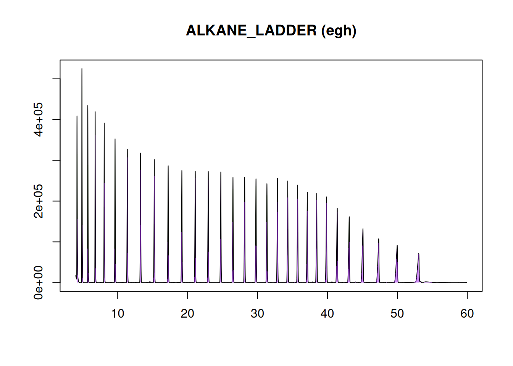
pks_f <- filter_peaks(pks, min_height = 10000)In this case, we also have integration results from ‘Shimadzu LabSolutions’, so we can check the integration results provided by chromatographR against the results from LabSolutions.
# check equality of retention times
# all.equal(alkanes$RT[-1], pks_f$ALKANE_LADDER[[1]]$rt)
par(mfrow=c(1,2))
plot(pks_f$ALKANE_LADDER[[1]]$area ~ alkanes$Area[-1], pch = 20,
xlab = "Area (LabSolutions)", ylab = "Area (chromatographR)",
main = "Area")
m <- lm(pks_f$ALKANE_LADDER[[1]]$area ~ alkanes$Area[-1])
abline(m)
legend("bottomright", bty = "n",
legend = bquote(R^2 == .(format(summary(m)$adj.r.squared, digits = 4))))
plot(pks_f$ALKANE_LADDER[[1]]$height ~ alkanes$Height[-1], pch = 20,
xlab = "Height (LabSolutions)", ylab = "Height (chromatographR)",
main = "Height")
m <- lm(pks_f$ALKANE_LADDER[[1]]$height ~ alkanes$Height[-1])
abline(m)
legend("bottomright", bty = "n",
legend = bquote(R^2 == .(format(summary(m)$adj.r.squared, digits = 4))))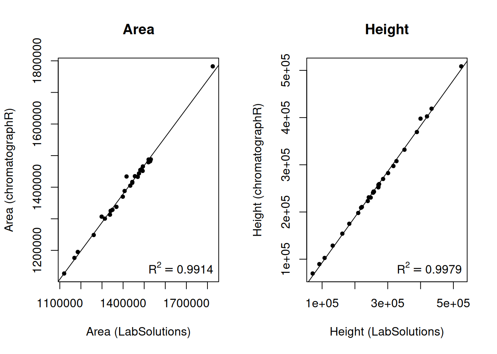
The peak areas and heights estimated by chromatographR closely match those from LabSolutions (see the R² in each panel).
Alignment of chromatograms
We can align chromatograms by species using variable penalty dynamic time warping.
warp_dominula <- suppressWarnings(correct_rt(dat.pr[species_idx$dominula],
alg = "vpdtw",
what = "corrected.values",
plot_it = TRUE, verbose = TRUE,
penalty = 1, max_shift = 0.5))
#> Selected chromatogram 9 as best reference.
#> Fitting VPdtw warping models.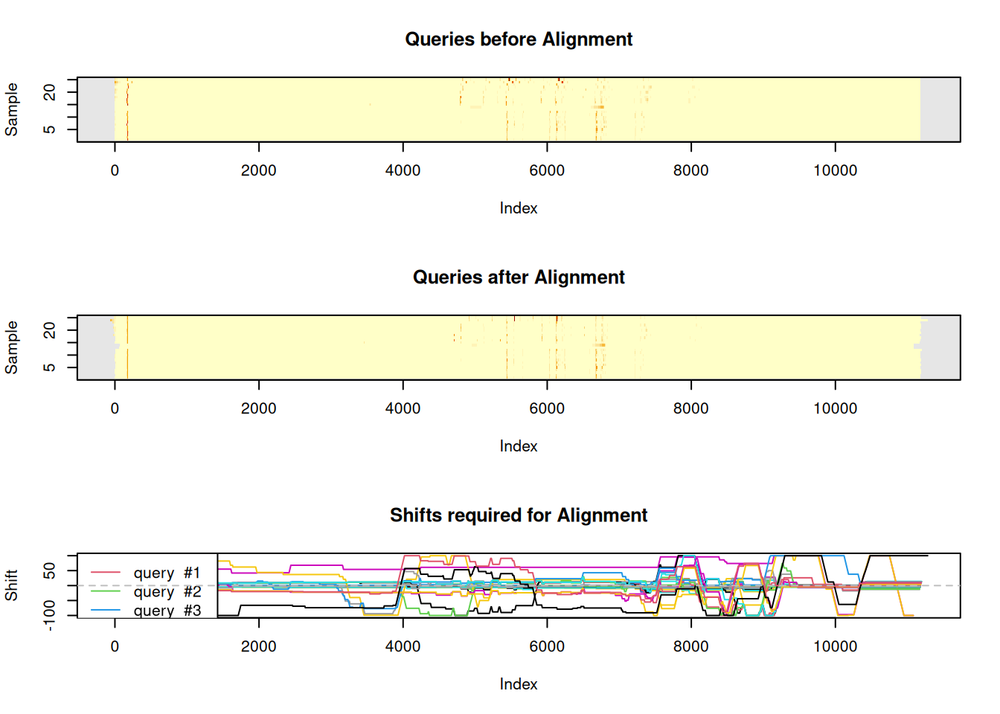
#> Applying VPdtw warping models to chromatograms.
warp_metricus <- suppressWarnings(correct_rt(dat.pr[species_idx$metricus],
alg = "vpdtw",
what = "corrected.values",
plot_it = FALSE, verbose = FALSE,
penalty = 0.5, max_shift = 0.5))
warp_exclamans <- suppressWarnings(correct_rt(dat.pr[species_idx$exclamans],
alg = "vpdtw",
what = "corrected.values",
plot_it = FALSE, verbose = FALSE,
penalty = 0.5, max_shift = 1))
warp_fuscatus <- suppressWarnings(correct_rt(dat.pr[species_idx$fuscatus],
alg = "vpdtw", what = "corrected.values",
plot_it = FALSE, verbose = FALSE,
penalty = 0.5, max_shift = 1))
warp_all <- suppressWarnings(correct_rt(dat.pr[-1], alg = "vpdtw",
what = "corrected.values", plot_it = FALSE,
verbose = FALSE, penalty = 0.5, max_shift = 1))As a sanity check, we can compare the single species alignments for each species to the multi-species alignment of the corresponding chromatograms.
par(mfrow=c(3,1))
plot_chroms_heatmap(dat.pr[species_idx$metricus], show_legend = FALSE,
title = format_italics("*P. metricus* (raw data)"), xlim=c(25, 50))
plot_chroms_heatmap(warp_metricus, show_legend = FALSE,
title = format_italics("*P. metricus* (single-species alignment)"),
xlim=c(25, 50))
plot_chroms_heatmap(warp_all[grep("PMET", names(warp_all))], show_legend = FALSE,
title = format_italics("*P. metricus* (multi-species alignment)"),
xlim=c(25, 50))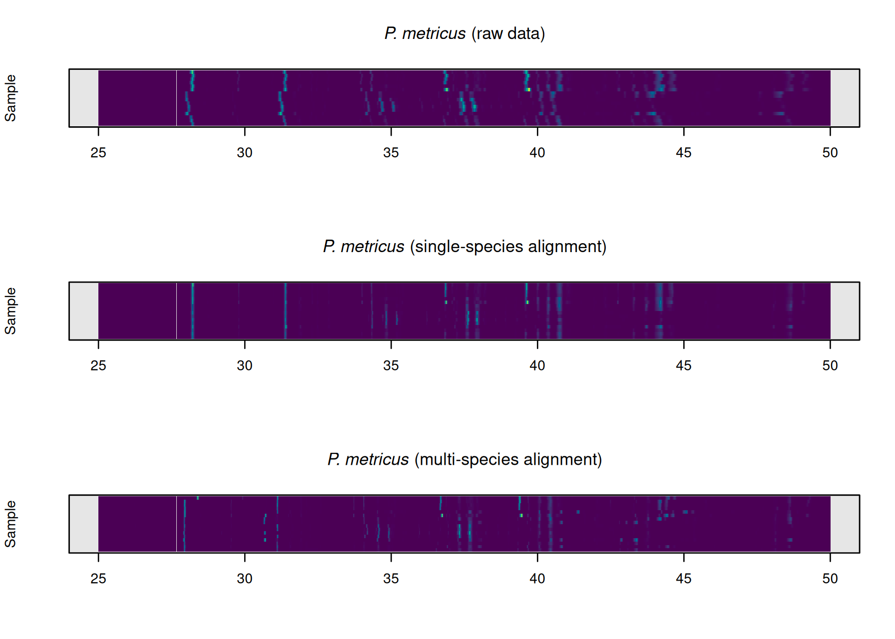
par(mfrow=c(3,1))
plot_chroms_heatmap(dat.pr[species_idx$fuscatus], show_legend = FALSE,
title = format_italics("*P. fuscatus* (raw data)"),
xlim=c(20,45))
plot_chroms_heatmap(warp_fuscatus, show_legend = FALSE,
title = format_italics("*P. fuscatus* (single-species alignment)"),
xlim=c(20,45))
plot_chroms_heatmap(warp_all[grep("PFUS", names(warp_all))], show_legend = FALSE,
title = format_italics("*P. fuscatus* (multi-species alignment)"),
xlim=c(20,45))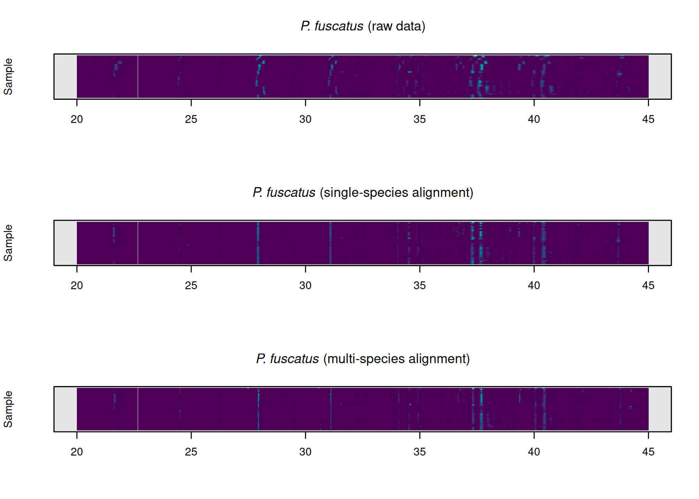
par(mfrow=c(3,1))
plot_chroms_heatmap(dat.pr[species_idx$dominula], show_legend = FALSE,
title = format_italics("*P. dominula* (raw data)"),
xlim=c(25,45))
plot_chroms_heatmap(warp_dominula, show_legend = FALSE,
title = format_italics("*P. dominula* (single-species alignment)"),
xlim=c(25,45))
plot_chroms_heatmap(warp_all[grep("PDOM", names(warp_all))], show_legend = FALSE,
title = format_italics("*P. dominula* (multi-species alignment)"),
xlim=c(25,45))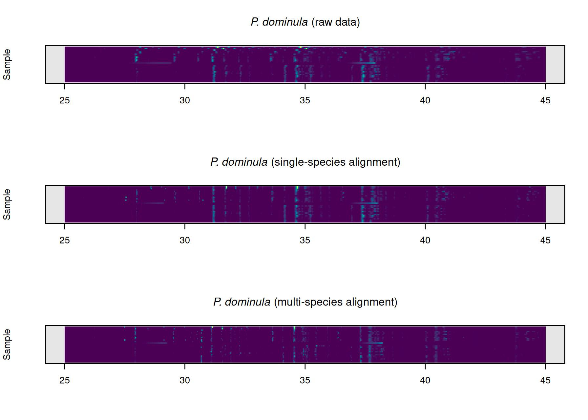
par(mfrow = c(3,1))
plot_chroms_heatmap(dat.pr[species_idx$exclamans], show_legend = FALSE,
title = format_italics("*P. exclamans* (raw data)"),
xlim = c(30,40))
plot_chroms_heatmap(warp_exclamans, show_legend = FALSE,
title = format_italics("*P. exclamans* (single-species alignment)"),
xlim = c(30,40))
plot_chroms_heatmap(warp_all[grep("PEXC", names(warp_all))], show_legend = FALSE,
title = format_italics("*P. exclamans* (multi-species alignment)"),
xlim = c(30,40))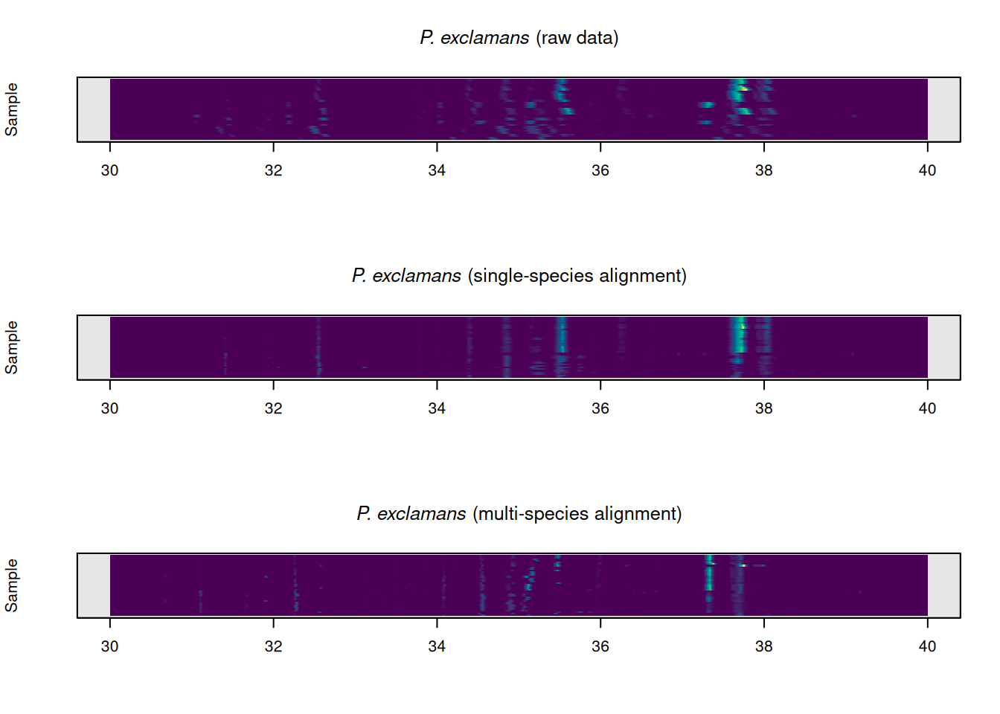
In general, the results are quite similar between multi-species and single species alignments, though the single-species alignments are noticeably better in some areas. Since we want to compare CHCs across species, we will proceed with the imperfect multi-species alignments.
Integration and peak table assembly
pks <- get_peaks(warp_all)
pktab <- get_peaktable(pks)
pktab <- attach_metadata(pktab, metadata = meta, column = "SAMPLE_ID")Analysis of cuticular hydrocarbon composition
m <- vegan::adonis2(pktab$tab ~ POLISTES_SPECIES + STATE + SEX + LAT + LON,
data = pktab$sample_meta, method = "manhattan",
na.action = na.omit, by = "margin")
m
#> Permutation test for adonis under reduced model
#> Marginal effects of terms
#> Permutation: free
#> Number of permutations: 999
#>
#> vegan::adonis2(formula = pktab$tab ~ POLISTES_SPECIES + STATE + SEX + LAT + LON, data = pktab$sample_meta, method = "manhattan", by = "margin", na.action = na.omit)
#> Df SumOfSqs R2 F Pr(>F)
#> POLISTES_SPECIES 3 4.7981e+10 0.09058 5.3513 0.001 ***
#> STATE 7 5.8241e+10 0.10995 2.7838 0.001 ***
#> SEX 1 1.1548e+10 0.02180 3.8639 0.001 ***
#> LAT 1 5.4575e+09 0.01030 1.8260 0.057 .
#> LON 1 7.4975e+09 0.01415 2.5086 0.006 **
#> Residual 105 3.1382e+11 0.59244
#> Total 118 5.2971e+11 1.00000
#> ---
#> Signif. codes: 0 '***' 0.001 '**' 0.01 '*' 0.05 '.' 0.1 ' ' 1The PERMANOVA attributes variance in CHC profiles to species (R2marginal = 0.09), state of origin (R2marginal = 0.11) and sex (R2marginal = 0.02).
Modified ggordiplot function with added shape argument.
# ggordiplot function (modified from https://github.com/jfq3/ggordiplots/blob/master/R/gg_ordiplot.R) with added shape argument
gg_ordiplot <- function (ord, groups, shape = NULL, scaling = 1, choices = c(1, 2),
kind = c("sd", "se", "ehull"), conf = NULL,
show.groups = "all", ellipse = TRUE,
label = FALSE, hull = FALSE, spiders = FALSE,
pt.size = 3, plot = TRUE) {
x <- y <- cntr.x <- cntr.y <- Group <- NULL
groups <- as.factor(groups)
if (show.groups[1] == "all") {
show.groups <- as.vector(levels(groups))
}
df_ord <- vegan::scores(ord, display = "sites", scaling = scaling,
choices = choices)
axis.labels <- ggordiplots::ord_labels(ord)[choices]
df_ord <- data.frame(x = df_ord[, 1], y = df_ord[, 2], Group = groups)
if (!is.null(shape)){
df_ord <- data.frame(df_ord, shape = shape)
}
df_mean.ord <- aggregate(df_ord[, c(1:2)], by = list(df_ord$Group),
mean)
colnames(df_mean.ord) <- c("Group", "x", "y")
df_mean.ord <- df_mean.ord[df_mean.ord$Group %in% show.groups,
]
if (is.null(conf)) {
rslt <- vegan::ordiellipse(ord, groups = groups, display = "sites",
scaling = scaling, choices = choices,
kind = kind, show.groups = show.groups,
draw = "none", label = label)
} else {
rslt <- vegan::ordiellipse(ord, groups = groups, display = "sites",
scaling = scaling, choices = choices,
kind = kind, show.groups = show.groups,
draw = "none", conf = conf,
label = label)
}
df_ellipse <- data.frame()
for (g in show.groups) {
df_ellipse <- rbind(df_ellipse,
cbind(as.data.frame(with(df_ord[df_ord$Group == g, ],
vegan:::veganCovEllipse(rslt[[g]]$cov, rslt[[g]]$center,
rslt[[g]]$scale))), Group = g))
}
colnames(df_ellipse) <- c("x", "y", "Group")
df_ellipse <- df_ellipse[, c(3, 1, 2)]
rslt.hull <- vegan::ordihull(ord, groups = groups, scaling = scaling,
choices = choices, show.groups = show.groups,
draw = "none")
df_hull <- data.frame()
df_temp <- data.frame()
for (g in show.groups) {
x <- rslt.hull[[g]][, 1]
y <- rslt.hull[[g]][, 2]
Group <- rep(g, length(x))
df_temp <- data.frame(Group = Group, x = x, y = y)
df_hull <- rbind(df_hull, df_temp)
}
df_spiders <- df_ord
df_spiders$cntr.x <- NA
df_spiders$cntr.y <- NA
for (g in show.groups) {
df_spiders[which(df_spiders$Group == g), 4:5] <-
df_mean.ord[which(df_mean.ord == g), 2:3]
}
df_spiders <- df_spiders[, c(3, 4, 5, 1, 2)]
df_spiders <- df_spiders[order(df_spiders$Group), ]
df_spiders <- df_spiders[df_spiders$Group %in% show.groups,
]
xlab <- axis.labels[1]
ylab <- axis.labels[2]
plt <- ggplot2::ggplot() + ggplot2::geom_point(data = df_ord, ggplot2::aes(x = x,
y = y,
color = Group,
shape = shape),
size = pt.size) +
ggplot2::xlab(xlab) +
ggplot2::ylab(ylab)
if (ellipse) {
plt <- plt + ggplot2::geom_path(data = df_ellipse, ggplot2::aes(x = x,
y = y, color = Group),
show.legend = FALSE)
}
if (label) {
plt <- plt + ggplot2::geom_text(data = df_mean.ord,
ggplot2::aes(x = x, y = y, label = Group, color = Group),
show.legend = FALSE)
}
if (hull) {
plt <- plt + geom_path(data = df_hull,
ggplot2::aes(x = x, y = y, color = Group),
show.legend = FALSE)
}
if (spiders) {
plt <- plt + ggplot2::geom_segment(data = df_spiders,
ggplot2::aes(x = cntr.x, xend = x, y = cntr.y, yend = y,
color = Group), show.legend = FALSE)
}
plt <- plt + ggplot2::coord_fixed(ratio = 1)
if (plot) {
print(plt)
}
invisible(list(df_ord = df_ord, df_mean.ord = df_mean.ord,
df_ellipse = df_ellipse, df_hull = df_hull,
df_spiders = df_spiders,
plot = plt))
}
ord <- vegan::rda(pktab$tab, scale = TRUE)
pktab$sample_meta$SEX_SP <- interaction(pktab$sample_meta$SEX,
pktab$sample_meta$POLISTES_SPECIES)
gg_ordiplot(ord, groups = pktab$sample_meta[,"POLISTES_SPECIES"],
shape = pktab$sample_meta[,"SEX"], plot = FALSE)$plot +
scale_shape_manual(values = c(19, 21), name = "Sex") +
labs(colour = "Species") +
theme_classic()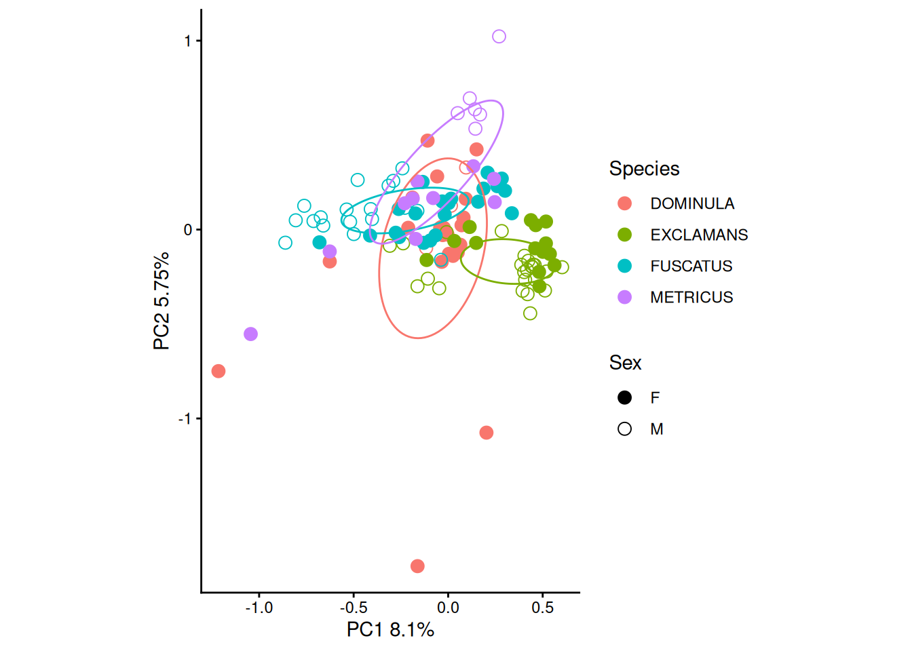
Principal components analysis separates P. exclamans from the other species along PC1 and partly separates P. metricus from P. dominula along PC2, with P. fuscatus overlapping both, although the first two axes explain only 14% of the variance.
We can get even better separation if we break down our data by sex, though there is considerable intraspecific variation.
cond <- which(pktab$sample_meta$SEX == "M")
ord_m <- vegan::rda(pktab$tab[cond,], scale = TRUE)
p_male <- gg_ordiplot(ord_m, groups = pktab$sample_meta[cond, "POLISTES_SPECIES"],
plot = FALSE)$plot +
ggtitle("Males") +
theme_classic() +
theme(legend.position = "bottom", plot.title = element_text(hjust = 0.5)) +
labs(colour = "Species")
cond <- which(pktab$sample_meta$SEX == "F")
ord_f <- vegan::rda(pktab$tab[cond,],scale=TRUE)
p_female <- gg_ordiplot(ord_f, groups = pktab$sample_meta[cond,"POLISTES_SPECIES"],
plot = FALSE)$plot +
ggtitle("Females") +
theme_classic() +
theme(legend.position = "bottom", plot.title = element_text(hjust = 0.5)) +
labs(colour = "Species")
p_male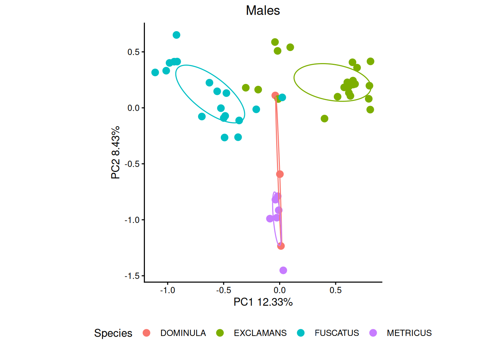
p_female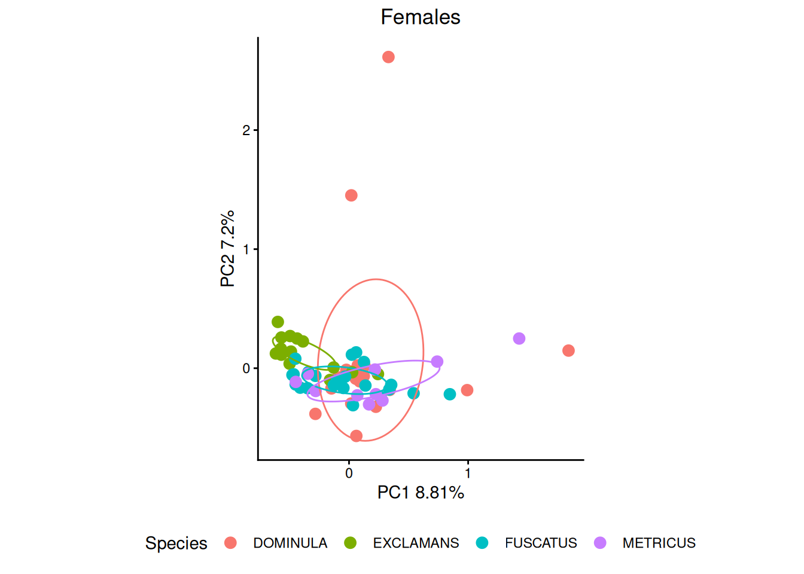
References
Session Information
sessionInfo()
#> R version 4.6.1 (2026-06-24)
#> Platform: x86_64-pc-linux-gnu
#> Running under: Ubuntu 24.04.5 LTS
#>
#> Matrix products: default
#> BLAS: /usr/lib/x86_64-linux-gnu/openblas-pthread/libblas.so.3
#> LAPACK: /usr/lib/x86_64-linux-gnu/openblas-pthread/libopenblasp-r0.3.26.so; LAPACK version 3.12.0
#>
#> locale:
#> [1] LC_CTYPE=C.UTF-8 LC_NUMERIC=C LC_TIME=C.UTF-8
#> [4] LC_COLLATE=C.UTF-8 LC_MONETARY=C.UTF-8 LC_MESSAGES=C.UTF-8
#> [7] LC_PAPER=C.UTF-8 LC_NAME=C LC_ADDRESS=C
#> [10] LC_TELEPHONE=C LC_MEASUREMENT=C.UTF-8 LC_IDENTIFICATION=C
#>
#> time zone: UTC
#> tzcode source: system (glibc)
#>
#> attached base packages:
#> [1] stats graphics grDevices utils datasets methods base
#>
#> other attached packages:
#> [1] ggplot2_4.0.3 vegan_2.7-6 permute_0.9-10
#> [4] chromatographR_0.9.0
#>
#> loaded via a namespace (and not attached):
#> [1] gtable_0.3.6 xfun_0.62 caTools_1.18.4
#> [4] lattice_0.22-9 vctrs_0.7.3 tools_4.6.1
#> [7] bitops_1.1-0 generics_0.1.4 curl_8.1.0
#> [10] parallel_4.6.1 tibble_3.3.1 cluster_2.1.8.2
#> [13] pkgconfig_2.0.3 Matrix_1.7-5 data.table_1.18.6.1
#> [16] RColorBrewer_1.1-3 S7_0.2.2 readxl_1.6.0
#> [19] lifecycle_1.0.5 compiler_4.6.1 farver_2.1.2
#> [22] stringr_1.6.0 ptw_1.9-17 RcppDE_0.1.9
#> [25] minpack.lm_1.2-4 htmltools_0.5.9 yaml_2.3.12
#> [28] Formula_1.2-6 pillar_1.11.1 MASS_7.3-65
#> [31] RaMS_1.4.3 nlme_3.1-169 tidyselect_1.2.1
#> [34] digest_0.6.39 stringi_1.8.9 dplyr_1.2.1
#> [37] purrr_1.2.2 labeling_0.4.3 VPdtw_2.2.1
#> [40] splines_4.6.1 fastmap_1.2.0 grid_4.6.1
#> [43] cli_3.6.6 chromConverter_0.11.1 magrittr_2.0.5
#> [46] base64enc_0.1-6 dynamicTreeCut_1.63-1 withr_3.0.3
#> [49] ggordiplots_0.4.3 scales_1.4.0 bit64_4.8.6
#> [52] rmarkdown_2.32 bit_4.6.0 otel_0.2.0
#> [55] reticulate_1.47.0 cellranger_1.1.0 fastcluster_1.3.0
#> [58] png_0.1-9 pbapply_1.7-5 evaluate_1.0.5
#> [61] knitr_1.52 mgcv_1.9-4 rlang_1.3.0
#> [64] Rcpp_1.1.2 glue_1.8.1 xml2_1.6.0
#> [67] jsonlite_2.0.0 R6_2.6.1 fs_2.1.0